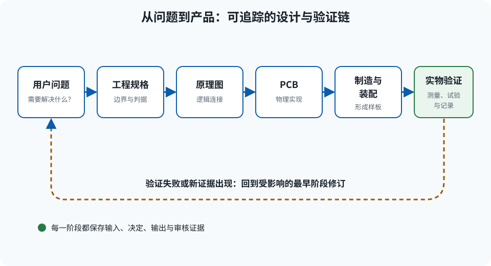
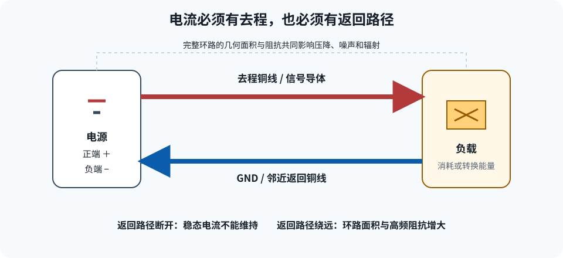
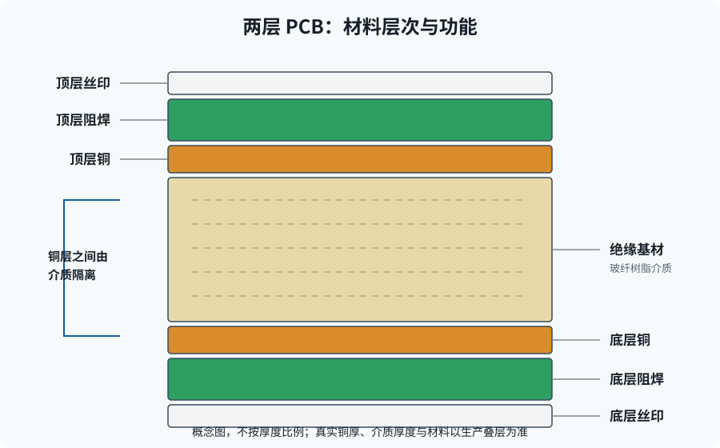

第一部分：基础知识（Part I — Foundations）
1. PCB 是什么以及如何工作（What a PCB Is and How It Works）
学习目标
学完本章后，你应能从物理电流回路而不是从“线条图案”理解 PCB，区分原理图中的逻辑连接与板上的真实几何，并能说明电气检查通过后为什么仍要进行机械审核。
- 定义电压、电流、电阻、功率与能量，并在单位之间正确换算；
- 沿电源、负载和返回导体追踪一条闭合电流环；
- 识别焊盘、走线、过孔、孔、平面、铺铜、阻焊、丝印与板框；
- 解释网络、符号、封装和器件实体之间的对应关系；
- 用 USB GPIO R1 的真实数据区分设计事实、CAD 计算与待实物验证项目。
1.1 从电路想法到物理产品
一个电路想法通常从“需要什么功能”开始，例如“让电脑控制 8 路数字信号”。工程设计必须把这句话逐层具体化：电脑通过什么接口通信？逻辑电压是多少？目标设备断电时是否会被反向供电？元件能否买到？封装能否焊接？铜线能否承载电流？连接器能否插入？制造厂收到哪些文件？
- 需求：规定用户看到的功能、边界与安全状态。
- 系统架构：把需求分成 USB、电源、控制、接口和保护等功能块。
- 原理图：用符号、引脚和网络表达应当怎样电连接。
- PCB：把抽象连接变成有宽度、长度、层和间距的铜，同时安排真实元件。
- 制造数据：输出铜层、阻焊、丝印、板框、钻孔、物料和坐标。
- 装配与验证：检查焊接，限流上电，并测量功能、热与信号行为。

R1 已完成到“原型制造发布”这一关：最终板名为 USB_GPIO_R1，名义尺寸 50 mm × 24 mm，两层铜，PCB 上有 48 个物理元件位号。发布审核通过不代表已经完成装配板上电；当前事实库中的实测记录仍为 0 条。
1.2 电压、电流、电阻、功率与能量
- 电压（Voltage，V）
- 两个节点之间单位电荷的能量差。电压必须说明“相对于哪里”，例如
3V3_SYS相对于 GND 的标称电压为 3.3 V。 - 电流（Current，A）
- 单位时间通过截面的电荷量。传统电流方向从较高电势流向较低电势；金属中的电子平均漂移方向与之相反。
- 电阻（Resistance，Ω）
- 在线性近似下描述导体对电流的阻碍。微观上，载流电子与晶格、缺陷和杂质相互作用，把电能转化为热。
- 功率（Power，W）
- 能量转换速率，
P = V × I。功率过大意味着单位时间产生的热量过多，可能升温、限流或损坏。 - 能量（Energy，J 或 Wh）
- 一段时间内转换的总量，恒定功率时
E = P × t。电容和电感也会暂时储存能量。
| 量 | 基本单位 | 常见换算 |
|---|---|---|
| 电流 | A | 1 mA = 0.001 A；1 µA = 0.000001 A |
| 电阻 | Ω | 1 kΩ = 1,000 Ω；1 MΩ = 1,000,000 Ω |
| 电容 | F | 1 µF = 10−6 F；1 nF = 10−9 F；1 pF = 10−12 F |
| 长度 | m、mm | 1 mil = 0.0254 mm；mil 不是毫米 |
1.3 闭合电流环：为什么每个信号都需要返回路径
电流不会在负载处消失。电源使电荷沿去程导体流过负载，电荷必须再沿某条返回导体回到源端，才形成闭合回路。若返回路径断开，稳态电流不能维持；若返回路径绕远，回路面积和阻抗增大，电压跌落、噪声与电磁辐射也会增加。

数字信号也遵守同一规律。U1 把 GPIO 从低电平切到高电平时，电流给目标输入及走线电容充电；返回电流通常在邻近地铜中流动。边沿越快，高频成分越强，返回路径的几何连续性越重要。因此“信号线已经连通”并不等于信号一定干净。
R1 是非隔离板，USB 主机、板上电路和目标接口共享 GND。这个共同参考使 3.3 V 逻辑有明确含义，也意味着错误接地可能把主机、目标或示波器之间形成意外大电流回路。
1.4 导体、绝缘体、铜层、介质与阻焊
导体含有较易移动的载流子，铜因电阻率低、可加工且可焊而用于 PCB 连接。绝缘体限制电荷自由移动，用于把不同铜层和相邻网络隔开。PCB 中的玻纤树脂基材既承载元件，又作为铜层之间的介质；介质厚度和介电性质还会影响高速走线阻抗。
两层板通常在绝缘基材的顶面与底面各有一层铜。制造时按图形去除不需要的铜，再覆盖阻焊层（Solder Mask）。阻焊层减少焊接桥连并保护大部分铜面，但它不是结构绝缘，也不能补救铜间距不足、潮湿污染或高压设计错误。

R1 的发布文件证明它有 Top 与 Bottom 两个铜层，但没有提供可用于阻抗认证的生产叠层。因此 USB 走线长度匹配属于 CAD 计算事实，不能据此声称阻抗或眼图已经合格。
1.5 焊盘、走线、过孔、孔、平面、铺铜、丝印与板框
| 图元 | 定义 | 设计错误的后果 |
|---|---|---|
| 焊盘（Pad） | 焊接器件引脚或接触测试探针的铜区域 | 尺寸或编号错误会导致无法焊接、引脚错接 |
| 走线（Track） | 铜层上的线状导体 | 过窄会增加压降与温升；过近会违反间距 |
| 过孔（Via） | 用金属化孔连接不同铜层 | 增加寄生电感、占用空间；孔盘过小会降低制造裕量 |
| PTH / NPTH | PTH 孔壁有铜，可导电；NPTH 孔壁无铜，通常用于机械定位 | 孔类型错误会影响连接、装配或机械配合 |
| 平面/铺铜 | 连接某网络的大面积铜，常用于 GND 或电源 | 孤岛、狭颈或错误网络会破坏回流，边界存在也不保证生成了铜 |
| 丝印 | 名称、方向、警告与装配标记 | 压到焊盘会不可读或影响制造；方向标错会诱发装反 |
| 板框 | 定义成品外形的闭合制造边界 | 开口、重复或错误尺寸会使板厂无法正确铣板 |
R1 最终有 608 条走线图元和 130 个通孔过孔；过孔钻孔为 12 mil、焊盘为 24 mil。它没有保留原生铺铜对象，而是使用 17 个已在 Gerber 中确认的静态 GND 填充区域。静态填充不会随元件或走线变化自动重算，因此任何几何修改后都必须重新生成并复核。
1.6 网络：原理图连接怎样变成物理铜
网络（Net）是电气上应互相连接的一组引脚、焊盘和铜图元。网络名不是装饰标签，而是原理图与 PCB 之间的连接契约。例如 3V3_SYS 包含 U3 的稳压输出、U1 的电源脚、去耦电容和 U5 输入；这些点无论在图上相距多远，都应属于同一电气节点。
有意串联的元件会把路径分成不同网络。GPIO0 的路径不是一个从 U1 直达连接器的网络，而是：
- U1 封装 12 脚 PA6 位于
GPIO0_MCU； - R14 的一端连接
GPIO0_MCU； - R14 的另一端连接
GPIO0_PWM0； GPIO0_PWM0到达 J2 的 5 脚。
R14 的存在改变了网络名称，也明确了保护边界。若把 R14 两端错误地赋成同一网络，EDA 工具可能认为电阻被铜短接；若网络名拼写不一致，逻辑上相同的连接可能变成开路。
R1 发布审核把 48/48 个原理图元件映射到 PCB，并把 172/172 个引脚按元件身份、引脚号和网络映射到焊盘；47 个命名网络的几何连通检查为 47/47。这些是设计文件的交叉核对，不是装配板的万用表测量。
1.7 原理图与 PCB 布局
原理图（Schematic）按功能关系表达元件、引脚和网络，通常故意忽略物理距离。PCB 布局（Layout）则必须处理坐标、旋转、层、走线宽度、孔、板边、实体空间和回流路径。
| 问题 | 原理图 | PCB |
|---|---|---|
| 哪些引脚应相连？ | 主要证据 | 必须实现该连接 |
| 元件相距多远？ | 通常不表达 | 由坐标和实体决定 |
| 电流回路面积多大？ | 只能推断功能路径 | 由真实走线和地返回决定 |
| 连接器能否插入？ | 不能证明 | 需结合板边、3D/实体尺寸审核 |
| 制造厂会得到什么铜？ | 不能直接证明 | 还要检查 Gerber 与钻孔输出 |
因此，同一电路可以有正确的原理图和很差的 PCB：例如去耦电容在逻辑上并联于电源与地，但若物理上离 U1 很远，高频电流仍要绕行，去耦效果会变差。
1.8 元件、符号、封装与 3D 实体
- 元件（Component）
- 设计中的一个具体实例，例如 U1 或 R14。
- 符号（Symbol）
- 原理图中的功能模型，包含可读的引脚名称、编号和电气类型。
- 封装（Footprint / Land Pattern）
- PCB 上的焊盘、孔、丝印和装配边界几何。
- 3D 实体或器件本体
- 真实器件占据的空间，包括高度、外壳、引脚、连接器插拔区和制造公差。
四者必须一致。以 U1 为例，符号的封装 1 脚必须对应 CH32V203K8T6 LQFP-32 实体的 1 脚标记；若符号网络正确但封装焊盘编号旋转或错位，生产出的板会把功能接到错误引脚。
3D 模型只是辅助证据。模型可能缺失、尺寸简化或原点错误，所以还要用数据手册机械图、封装尺寸与装配包络核对。R1 最终对全部 1,128 对元件进行了实体包络和封装形状两套检查。
1.9 通孔与表面贴装
通孔元件（Through-Hole）的引脚穿过 PTH 并在另一面焊接，机械固定通常较强，适合连接器和教学手焊，但占用两面空间且自动装配成本可能较高。表面贴装元件（Surface-Mount Device，SMD）焊在表面焊盘上，体积小、寄生参数低、适合自动贴装，但细小封装需要更好的工艺和返修工具。
R1 的拟装配元件全部在顶面。大多数电阻、电容和芯片采用表面贴装；J2 的 2×8、2.54 mm 目标排针与 J3 的 1×5、1.27 mm 调试接口在 PCB/CPL 中存在，但被明确设为 DNP，即制造 BOM 不安装，用户按需要焊接或使用夹具。
| 维度 | 通孔 | 表面贴装 |
|---|---|---|
| 机械承力 | 适合频繁插拔的连接器，但仍需正确固定脚 | 小型器件足够，纯焊盘承受大插拔力时需谨慎 |
| 高频性能 | 引脚和孔通常带来更大寄生参数 | 回路可更紧凑 |
| 手工返修 | 引脚间距大时直观 | 0603、SOT-23 和 LQFP 需要合适工具与练习 |
| 板面积 | 孔贯穿板，限制两面走线 | 可高密度布置 |
1.10 为什么电气检查通过仍可能机械上不可能
ERC 和 DRC 主要检查它们已被配置去理解的规则。一个焊盘可以与正确网络连通、铜间距也合格，但器件本体仍可能互相穿透，连接器可能朝向板内，电容可能被压在连接器外壳下，或板边可能挡住插头。
机械审核至少应同时查看：
- 数据手册本体尺寸和高度；
- 封装庭院或装配包络；
- 连接器插头、线缆和手指操作空间；
- 板边、固定孔、螺钉、外壳和工具空间；
- 极性、1 脚方向和可见标记；
- 制造与返修所需间隙。
最终 R1 的 J1 朝左、旋转 −90°，连接器本体有意越过左板边；这不是错误，但必须在板框和机械审核中被明确记录。工程上的关键不是“是否越界”，而是“越界是否有意、可装配且与制造数据一致”。
1.11 实验：追踪简单 LED 板上的电流环
目的：把原理图中的节点转换为实际去程与返回路径，并用万用表验证断电连通关系。实验使用独立的 3.3 V 低压电源、1 kΩ 电阻和 LED；不要在尚未完成上电检查的 R1 上进行。
器材：面包板、LED、1 kΩ 电阻、可设 3.3 V 且具电流限制的电源、数字万用表、导线。建议把电流限制设为不高于 20 mA。
接线：电源正端 → 1 kΩ 电阻 → LED 阳极；LED 阴极 → 电源负端。电源负端是本实验的 GND。
- 保持断电，按 LED 数据手册或外观标记确认阳极、阴极。
- 画出传统电流方向，并用另一种颜色画出从 LED 阴极返回电源负端的路径。
- 用万用表电阻或连续性模式检查导线，确认电源正负端没有直接短路。
- 将电源设为 3.3 V 和不高于 20 mA 的电流限制，输出仍保持关闭。
- 复核接线后开启输出，观察 LED；记录电源显示值，不把显示值预先填入表格。
- 断电。移除返回导线，再上电观察；随后立即断电并恢复接线。
- 解释为什么去程连接全部存在时，返回路径断开仍不能维持 LED 电流。
| 状态 | 设定电压 | 电源显示电流 | LED 现象 | 备注 |
|---|---|---|---|---|
| 闭合回路 | ||||
| 返回导线断开 |
预期而非实测：接线和极性正确时，闭合回路应使 LED 发光；返回导线断开时应熄灭。实际亮度和电流取决于 LED 正向压降、电阻误差与电源。
通过判据：学生能在实物上指出完整去程和返回路径，原始记录完整，并能用“回路断开”而不是“地把电吸走”解释现象。
故障排查：若闭合回路不亮，先断电检查 LED 极性、面包板行列连接、电阻值和导线；不要通过提高电压绕过检查。
1.12 复习题与常见误解
- 为什么“某点是 3.3 V”是不完整的说法？应补充什么参考节点？
- 用自己的话区分功率与能量，并写出各自单位。
- 信号走线已经从 U1 连到 J2，为什么仍要检查邻近的地返回路径？
- 解释原理图网络、PCB 铜和装配板导通测量三者证据强度的差别。
- R1 的 47/47 网络几何连通是否证明每块装配板都没有虚焊？为什么？
- PTH 与 NPTH 的孔壁有什么差别？误用可能带来什么后果？
- 为什么阻焊层不能当作修复铜间距不足的方法？
- 列出两个电气 DRC 很可能发现不了的机械问题。
| 误解 | 正确理解 |
|---|---|
| “地会吸收所有电流。” | GND 是参考与返回网络，电流必须回到源端。 |
| “线宽只影响能不能连上。” | 线宽还影响电阻、压降、温升、制造裕量与阻抗。 |
| “有铺铜边界就有地平面。” | 必须重铺并检查实际生成的铜，最终还要看 Gerber。 |
| “DRC 为 0 就能生产且一定工作。” | DRC 只覆盖配置的规则；机械、热、固件、信号和实物缺陷仍需独立验证。 |
| “3D 模型没有碰撞就绝对安全。” | 模型也可能错误，必须回查数据手册尺寸、庭院和真实配合。 |
本章小结
PCB 同时是电气网络、机械载体和制造对象。电压描述节点间能量差，电流必须形成闭合环，电阻导致压降和发热，功率决定能量转换速率。原理图说明“应怎样连接”，PCB 决定“实际如何连接和占据空间”。自动电气检查、机械审核、制造输出检查与实物测量互不替代。